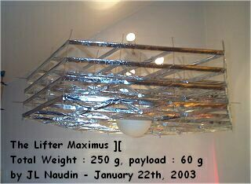

The
Lifter-Cell, towards Modular Thrusters...
The
Lifter-Cell, towards Modular Thrusters...
created on October
10th, 2001 - JLN Labs - Last
update March 10, 2003
Toutes les informations et schémas sont publiés
gratuitement ( freeware ) et sont destinés à un usage personnel
et non commercial
All informations and
diagrams are published freely (freeware) and are intended for a private use and a non commercial
use.
 Le
Lifter HCD-03 de Claude Dupré
Le
Lifter HCD-03 de Claude Dupré  ( plan, photos et
vidéo )
( plan, photos et
vidéo )
 The
stacked Lifters ( 19 g of payload ) by Saviour (
01-16-02 )
The
stacked Lifters ( 19 g of payload ) by Saviour (
01-16-02 )
Return to the Lifter project home page